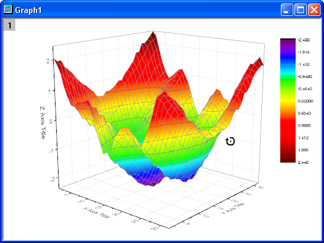

3D-Diagramme drehen, in der Größe verändern, strecken und schräg anzeigen
3DGraph-Transform
Origin enthält die Symbolleiste 3D-Drehung zum Drehen, Kippen und Vergrößern bzw. Verkleinern der Perspektivansicht von 3D-Diagrammen.
 |
Außerdem können Sie die Diagramme drehen, in der Größe verändern, strecken und schief anzeigen, indem Sie direkt an ihnen mit der Maus ziehen oder eine Tastenkombination verwenden.
Es gibt einen Hinweis in der Statusleiste, der den aktuellen Modus und das Inkrement des Geschwindigkeitsfaktors zeigt.
|
3D-Diagramme in der Größe verändern
Um ein 3D-Diagramm in der Größe zu verändern und dabei das Seitenverhältnis beibehalten,
- klicken Sie auf das Diagramm (den weißen Bereich des Diagrammlayers, nicht das 3D-Diagramm). Acht Bedienelemente für die Größenveränderung werden um das 3D-Diagramm herum angezeigt. Ziehen Sie an einem der Elemente, um die Größe des Diagramms zu verändern.

Oder
- Klicken Sie auf die Schaltfläche Größe verändern auf dem Diagramm, um die Größe des Diagramms durch Ziehen an einem der gelben Bedienelemente zur Größenveränderung von 3D-Diagrammen zu modifizieren.

3D-Diagramme verschieben
Um ein 3D-Diagramm zu verschieben, klicken Sie auf das Diagramm (den weißen Bereich des Diagrammlayers, nicht das 3D-Diagramm). Acht Bedienelemente für die Größenveränderung werden um das 3D-Diagramm herum angezeigt. Drücken Sie die Maustaste, um den Diagrammlayer an eine andere Stelle zu ziehen.
3D-Diagramme drehen
Symbolleiste drehen
Sie können 3D-Diagramme um eine der Achsen drehen. Um ein 3D-Diagramm zu drehen, klicken Sie auf die Schaltfläche Drehen  auf der Symbolleiste Hilfsmittel.
auf der Symbolleiste Hilfsmittel.
Wenn die Maus auf dem Diagramm bewegt wird, wird sie zu einer kreisförmigen Kurve mit einem Pfeil im Uhrzeigersinn. Ziehen Sie an der Maus, um das 3D-Diagramm um eine der Achsen zu drehen.
- 
Um das 3D-Diagramm um die X-Achse herum zu drehen, drücken Sie Strg und ziehen Sie an der Maus. Um es um die Y-Achse herum zu drehen, drücken Sie Shift und ziehen Sie an der Maus. Um das 3D-Diagramm in eine beliebige Richtung zu drehen, drücken Sie sowohl Strg und Shift und ziehen Sie an dem Diagramm.
Drehball
Klicken Sie auf das 3D-Diagramm (den weißen Bereich des Diagrammlayers, nicht das 3D-Diagramm). Es werden acht Elemente um das 3D-Diagramm herum angezeigt. Klicken Sie auf die Schaltfläche Drehen auf dem Diagramm. Der Drehball wird angezeigt. Ziehen Sie an einem der Hotspots, um das 3D-Diagramm in Ihrem Sinn zu drehen.
3D-Diagramme strecken
Mit Origin können Sie ein 3D-Diagramm entlang der X-, Y- oder Z-Achse strecken. Klicken Sie zuerst ein Mal in den weißen Bereich des Diagrammlayers, um die beweglichen 3D-Schaltflächen einzublenden. Klicken Sie auf die Schaltfläche Größe verändern, um das entsprechende 3D-Bedienelement zu aktivieren.

Ziehen Sie an dem Ende der X-Achse, um das Diagramm in Richtung der X-Achse zu strecken.
3D-Diagramme schräg legen
Sobald das Kontrollkästchen Abschneiden aktivieren auf der Registerkarte Allgemeines des Dialogs Details Zeichnung aktiviert ist, wird die Schaltfläche Schräg in der Gruppe der frei beweglichen 3D-Schaltflächen angezeigt, wenn Sie auf den weißen Bereich des Diagrammlayers klicken. (Hinweis: Für 3D-Wasserfalldiagramme ist das Kontrollkästchen Abschneiden aktivieren standardmäßig aktiviert.)
Sie können diese Schaltfläche verwenden, um das 3D-XYZ/Matrixdiagramm in X/Z-Richtung und das 3D-XYY-Diagramm in X/Y-Richtung abzuschneiden.
Klicken Sie auf die Schaltfläche Schräg, um das entsprechende Bedienelement zu aktivieren.
Ziehen Sie an dem X/Z-Hotspot, um das Diagramm schräg in X/Z-Richtung zu legen.